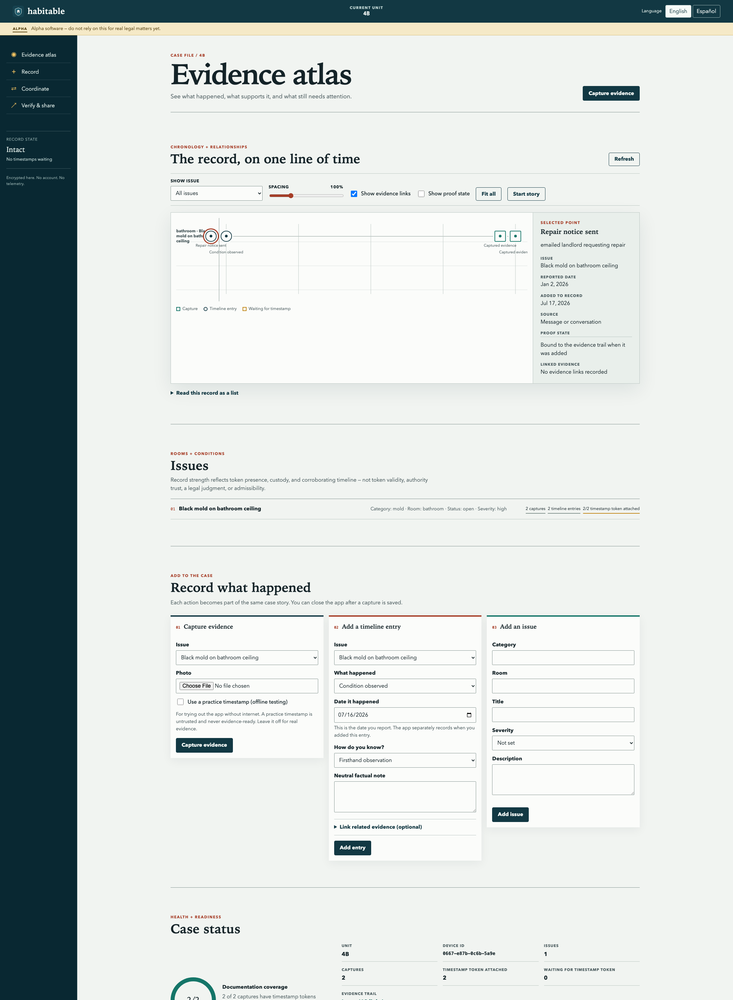
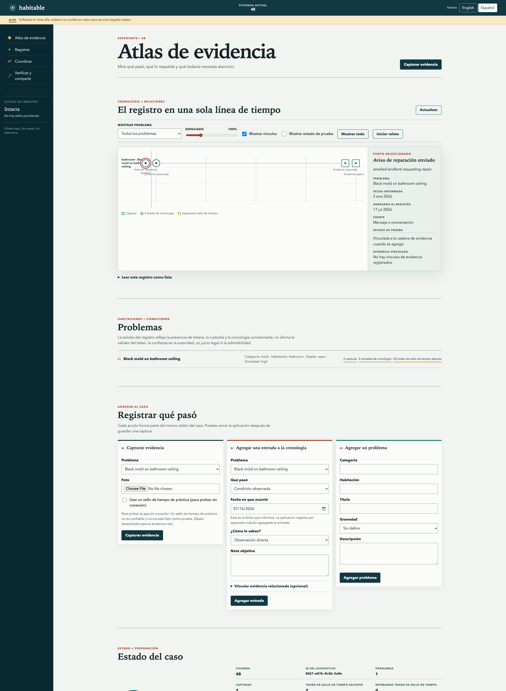
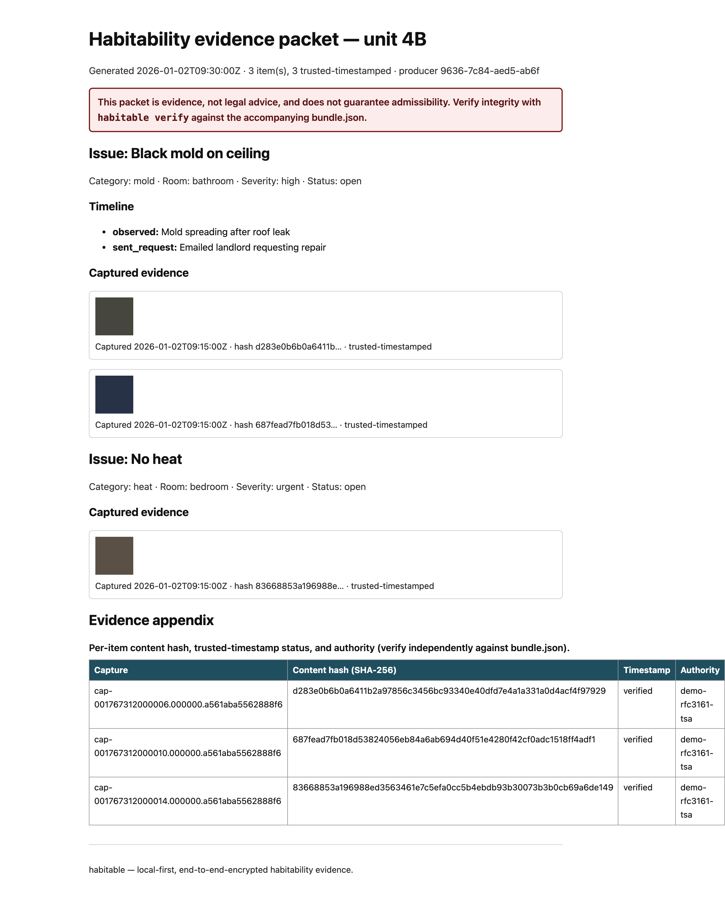

Tenant unions
Test whether the capture, notice timeline, organizer review, and packet workflow fit your practice—using synthetic cases first.
Tenant-owned habitability records
Document conditions, repair notices, responses, and recurrence offline. Share a court-organized packet whose integrity a recipient can check independently.
The pilot link opens a public GitHub form. Never include tenant names, addresses, photos, evidence, or case details; evaluation starts with synthetic data only.
Alpha boundary: Habitable is built and test-gated on synthetic data, but it is not independently audited or proven in court. Do not rely on it for a real legal matter yet.
Current status / alpha
The workflow
Habitable Evidence is a local, encrypted case record for tenants and tenant unions. It keeps the condition, the notice trail, and the technical integrity record together—then lets the union decide what leaves the device.
Routes by role
Test whether the capture, notice timeline, organizer review, and packet workflow fit your practice—using synthetic cases first.
Inspect packet readability, verification claims, and evidentiary limits against the rules and practice of your own forum.
Help close a named gate: security, cryptography, accessibility, threat modeling, legal framing, packaging, or documentation.
Trust before adoption
Evidence boundary: Integrity checks can show that bytes and records have not changed after sealing. They cannot prove what a photo depicts, who created it, or whether a particular court or agency will admit it. Habitable produces a verifiable, court-organized alpha packet—not a promise of a court outcome.
Synthetic walkthrough



Run it locally
Requires uv; the right Python (3.14) is fetched for you.
git clone https://github.com/ChelseaKR/habitable && cd habitable
uv sync
uv run habitable demo # capture → seal+hash → RFC 3161 → packet → verify, offline
uv run habitable app # the accessible local web app (English / Español)
There is deliberately no hosted app: habitable runs on
localhost. Use habitable demo and synthetic records for evaluation;
this page and the sample packet are static previews of what the tool produces.
Technical record
Current housing problem
Habitable is not legal advice, an emergency service, or a place to post evidence. Do not put tenant names, addresses, photos, or case details in GitHub issues.
Eviction and safety deadlines can move quickly. Contact local legal aid, court self-help, code enforcement, a health department, or emergency services as the situation requires.